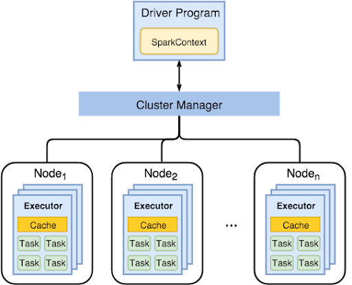
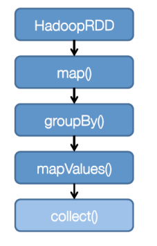
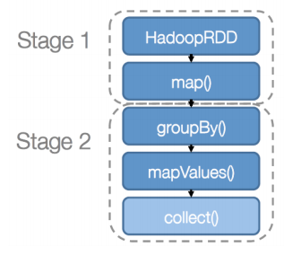

§ Clouds: Apache Spark
The main issue with MapReduce is the read/write from and to the disk. For example, in the case of K-means, the main steps are:
- HDFS Read → Map → Network Shuffle → Reduce → HDFS Write
Now, the issue with the R/W operations is the issue of accessing data from the memory and disk →
Random Access from disk is slower, but it offers a larger volume of data. So, the question is should I store my data on disk or in Memory?
The answer → if the data is accessed more than once in 5 minutes, cache it in memory; otherwise, store it on the disk →
The 5-minute rule
§ Economics of Data Access
- If I have 2000 euros per access from disk and 5 euros for KB of data in memory, then for each kb of data we save 2000 euros for every 5 euros we spend on memory each second. If our rate of access of 1 access per 10 secs, we save 200 euros, and this trend continues. The break-even point is 400 secs, which is roughly 5 minutes. Hence, the 5-minute rule.
- Now, HDFS stores all data in the disk and so, nothing is cached in memory → misaligned with the 5 minutes rule. Plus, Map and Reduce are too simple computationally.
§ Apache Spark
- Let's keep the good stuff from Hadoop, but also add the touch of memory and added functions.
The main workflow is shown below:

- While in MapReduce we had only 1 master to assign worker nodes as Map and Reduce, in spark we have a separation where there is a driver program scheduling the applications and the executions, while the cluster manager allocates the resources. The primary advantage is that the driver program can be initiated with a spark-context that holds the main configuration and is flexible to different kinds of configurations - single-threaded, multi-threaded, local, distributed, etc. - and thus, allows managing different operations.
- The cluster manager sends app-codes and tasks for executors to run. The workers have a cache that they can use to run their bits composed of locally schedules tasks, in an isolated manner .
- There is no data shared between workers, but the executors within workers share the same virtualization. Thus, if we have 2 applications, they can be run on 2 different workers and can have multiple tasks that can be scheduled in executors that share the data, and execute each task as a thread. In MapReduce, this would be executed in a purely distributed manner through mapper nodes with overheads for each. Thus, overheads are reduced in spark.
§ RDD
Resilient Distributed Datasets extend the concepts of functions to data-structures. Thus, they are immutable objects that either point directly to a data source (HDFS), or apply filter transformations to parent RDDs. Thus the functions are of two types:
- Transformations → Apply to RDD and return an RDD. E.g., map, filter, groupBy, sortBy
- They are lazily evaluated → Only triggered through actions
- Actions → Use an RDD to return values
Thus, we can write applications as transformations on RDD and need to only execute them based on actions determined on the time on which they need to be executed. This is similar to the lambda functions in python → They work Lazily.
The execution steps are:
- Create DAG of computation
- Create a Logical execution plan with as much pipelining as possible
- Partition the tasks into nodes
- Determine Dependency and Split DAG into “stages” based on the need to shuffle data → determined by the kind of function in the stage
- Submit Each stage and its task as ready
- Launch task via Master
- Retry failed and straggler tasks
- Execute tasks
- Store and serve blocks
The dependency mentioned in step-4 can be of two types:
- Narrow Dependency → The mapping from parent to Children RDD is on a 1-1 basis i.e each parent RDD will share data with at-most 1 child RDD. Thus, there is no shuffling step in the middle which reduces overhead. e.g
map. filterMap, filter, sample. - Wide Dependency → Multiple child partitions may depend on one partition of the parent RDD. E.g.
sortByKey, reduceByKey, groupByKey, cogroupByKey, join, cartesian.
The key idea in creating a pipeline is to look for shuffling → If we have a group of tasks that do not require shuffling, we can group them together as a stage, and then shuffle. Thus, the stuff in one stage can be executed iteratively. For example, in the DAG shown below:

We know that
groupBy() requires shuffling but the
map() does not. Thus, we break a stage here. Then, we see that
mapvalues() function does not require shuffling, so we have two stages as shown below:

§ RDD and Spark
- We can cache outpus in the memory improve performance!
Let's take the example of Log Mining, where we want to see the error log to look for certain kinds of error like MySQL and php. The following code template would be used for reference:
lines = spark.textfile("hdfs://...)
errors = lines.filter(lambda s: s.startswith("Error"))
messages = errors.map(lambda s: s.split("\t")[2])
messages.cache()
messages.filer(lambda s: "mysql" in s).count()
Here, we are taking an HDFS file and filtering for the word "Error" in it. Then, we split it around tabs "\t" and look at the second element in the split array. This output is cached. To this cached output, we apply the filter for "MySQL", to search for SQL errors. If we were to close the code till the cache, the output would still be there when we apply MySQL query to it. Now, if we add a PHP query later to this
lines = spark.textfile("hdfs://...)
errors = lines.filter(lambda s: s.startswith("Error"))
messages = errors.map(lambda s: s.split("\t")[2])
messages.cache()
messages.filer(lambda s: "mysql" in s).count()
messages.filer(lambda s: "php" in s).count()
It would only work on the cached output, and not repeat the process before it. Thus, the new computation would only happen on local machines, and the data would be fetched from the memory instead of the disk. This is the key feature that makes spark aligned with the 5-minute rule:
We can cache the computations that are being accessed regularly while keeping the rest in disk!!
§ Failure Tolerance
The RDD abstraction is immutable, and simultaneous updates are not allowed. Thus, it can be cached and shared across processes and tasks! This allows failures to be taken into account easily.